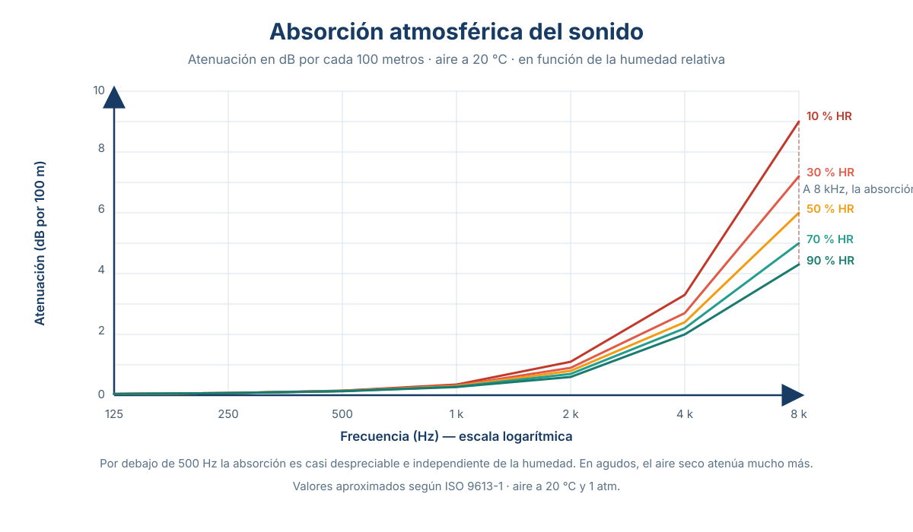
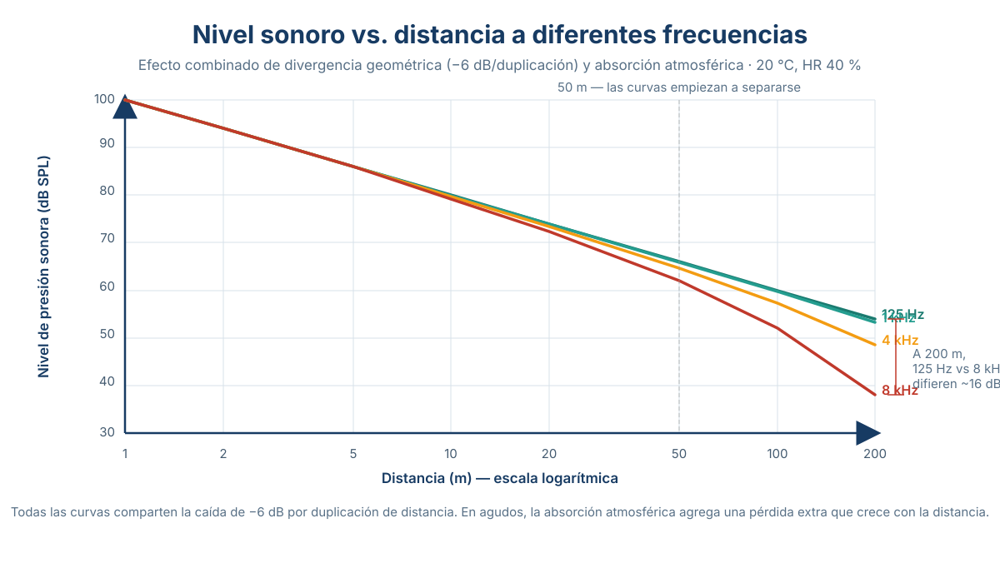

Sesión 10: Absorción atmosférica¶
Unidades y símbolos (glosario de referencia)
Consultá esta tabla cuando encuentres una unidad o símbolo que no conozcas. Cada término en el texto está vinculado a esta tabla.
Más allá del inverso del cuadrado: ¿por qué el sonido se atenúa más de lo esperado?
En la sesión 9 aprendimos que en campo libre la atenuación es puramente geométrica: −6 dB por duplicación de distancia. Pero cualquiera que haya estado en un festival al aire libre sabe que el sonido no viaja para siempre. A distancias largas, los agudos desaparecen mucho antes que los graves. El culpable es el aire mismo.
La absorción atmosférica es la pérdida de energía sonora por fricción molecular en el aire. No es que el sonido «se gaste» — es que la energía acústica se convierte en calor (por mínimo que sea) a medida que las moléculas de aire vibran y chocan entre sí. Este fenómeno se superpone a la divergencia geométrica:
| Símbolo | Nombre | Significado |
|---|---|---|
| \(20\log_{10}(r_1/r_2)\) | Divergencia geométrica | −6 dB por duplicación, siempre presente, independiente de la frecuencia |
| \(\alpha\) | Coeficiente de absorción atmosférica | Depende de frecuencia, temperatura y humedad relativa |
| \(r\) | Distancia recorrida | A mayor distancia, más contribuye la absorción atmosférica |
¿Cuándo importa la absorción atmosférica?
A corta distancia (<10 m), la divergencia geométrica domina totalmente — la absorción atmosférica es despreciable. En estudio, no te afecta. En un concierto al aire libre con público a 50-100 m del escenario, la absorción atmosférica ya es significativa, especialmente en agudos. En aplicaciones de monitorización ambiental (ruido de aeropuerto, de autopista) a cientos de metros, la absorción atmosférica PUEDE ser el factor dominante.
El coeficiente de absorción atmosférica (α): ¿de qué depende?
La absorción atmosférica no es constante — varía dramáticamente con tres factores:
1. Frecuencia: el factor dominante¶
Las frecuencias altas se atenúan MUCHO más que las bajas. Aproximadamente:
Duplicar la frecuencia cuadruplica la absorción. Una onda de 8 kHz se atenúa 64 veces más rápido que una de 1 kHz en las mismas condiciones.
2. Humedad relativa: el efecto más sorprendente¶
Contrario a la intuición popular: el aire seco atenúa MÁS los agudos que el aire húmedo. El vapor de agua actúa como «lubricante molecular» — las moléculas de H₂O amortiguan las colisiones entre moléculas de O₂ y N₂ que disipan energía acústica. En aire muy seco (desierto, invierno frío, altura), los agudos viajan peor.
3. Temperatura¶
La temperatura modifica la viscosidad del aire y la velocidad molecular. A mayor temperatura, ligeramente menor absorción a frecuencias medias, pero el efecto es secundario comparado con frecuencia y humedad.

🎛️ Abrir simulación interactiva — ¿Qué queda del sonido?
Mueve la distancia (1–2000 m), alterna la humedad y activa/desactiva la divergencia geométrica y la absorción atmosférica. Observa cómo el espectro se transforma: los agudos se "oscurecen" con la distancia.
Tabla de absorción atmosférica (dB/100 m, 20°C)
| Frecuencia | 10% HR (muy seco) | 30% HR (seco) | 50% HR (típico interior) | 70% HR (típico exterior templado) | 90% HR (muy húmedo) |
|---|---|---|---|---|---|
| 125 Hz | < 0.01 | < 0.01 | < 0.01 | < 0.01 | < 0.01 |
| 250 Hz | < 0.01 | < 0.01 | < 0.01 | < 0.01 | < 0.01 |
| 500 Hz | 0.01 | < 0.01 | < 0.01 | < 0.01 | < 0.01 |
| 1,000 Hz | 0.05 | 0.02 | 0.01 | 0.01 | 0.01 |
| 2,000 Hz | 0.20 | 0.10 | 0.07 | 0.05 | 0.04 |
| 4,000 Hz | 0.70 | 0.40 | 0.25 | 0.18 | 0.15 |
| 8,000 Hz | 2.20 | 1.40 | 0.90 | 0.60 | 0.45 |
Esto es atenuación ADICIONAL a la divergencia geométrica
La tabla muestra SOLO la absorción del aire, no la divergencia esférica. Para obtener la atenuación total, hay que SUMAR ambas. A 100 m, 4 kHz, 50% HR: divergencia = −40 dB, absorción = −0.25 dB → total ≈ −40.25 dB (la divergencia domina). Pero a 500 m, 8 kHz, 30% HR: divergencia = −54 dB, absorción = −7 dB → total ≈ −61 dB (la absorción ya contribuye significativamente). A 1 km, 8 kHz, 30% HR: divergencia = −60 dB, absorción = −14 dB → total ≈ −74 dB (¡la absorción es casi un 25% de la atenuación total!).
Consecuencias audibles: por qué los truenos suenan graves en la distancia
El fenómeno¶
Todos lo hemos experimentado: un trueno cercano suena como un chasquido seco y agudo. Un trueno lejano suena como un retumbo grave y prolongado. ¿Por qué? No es que el rayo produzca frecuencias distintas según la distancia — es que el aire absorbe selectivamente los agudos.
| Distancia | ¿Qué llega al oído? | ¿Qué pasó? |
|---|---|---|
| < 1 km | Espectro completo: chasquido agudo + retumbo grave | Poca absorción acumulada |
| 1–5 km | Agudos atenuados, medios presentes, graves intactos | Los 2-8 kHz pierden entre 2 y 15 dB/100 m |
| > 10 km | Solo graves (<500 Hz). Sonido sordo, sin definición | Los agudos fueron absorbidos completamente por el aire |
La misma física en producción musical¶
| Situación | Implicación de la absorción atmosférica |
|---|---|
| Concierto al aire libre, público a 80 m | Los agudos del tweeter llegan atenuados ~1-3 dB más que los graves (según humedad). El sonidista debe ecualizar los tweeters con un boost suave en agudos para compensar. Por eso los sistemas de PA profesionales tienen procesadores DSP con compensación por distancia |
| Grabación de campo (field recording) | A 100 m de una fuente, la grabación tendrá un roll-off natural en agudos. Si querés capturar el ambiente «como suena realmente», dejalo. Si necesitás inteligibilidad, ecualizá |
| Refuerzo sonoro en estadios | A 200 m de las torres de PA, los agudos perdieron mucho más que los medios. Los sistemas modernos usan line arrays con elementos configurados individualmente (delay + EQ) para compensar la absorción diferencial por distancia |
| Estudio de grabación | La absorción atmosférica es completamente despreciable (0.0001 dB a 3 m). No afecta ninguna decisión de mezcla ni de diseño de sala |

Ejemplo de cálculo: diseñando el refuerzo sonoro de un evento exterior
Un festival se realiza en un campo abierto. Temperatura: 25°C, humedad relativa: 40% (día seco de verano). El sistema de PA entrega 105 dB SPL a 1 m en la banda de 4 kHz (el tweeter). Queremos saber qué nivel llega a un espectador a 50 m.
Paso 1 — Divergencia geométrica: [ \text{SPL}{\text{geom}}(50) = 105 + 20\log ]}(1/50) = 105 - 34.0 = 71.0\ \text{dB SPL
Paso 2 — Absorción atmosférica: De la tabla (interpolando), a 4 kHz, 40% HR, 25°C: α ≈ 0.30 dB/100 m. [ \text{Atenuación}_{\text{aire}} = 0.30 \cdot (50/100) = 0.15\ \text{dB} ]
Paso 3 — Total: [ \text{SPL}_{\text{total}}(50) = 71.0 - 0.15 = 70.85 \approx 71\ \text{dB SPL} ]
A 50 m, con HR = 40%, la absorción atmosférica aporta solo 0.15 dB — insignificante. Pero repitamos para 200 m y 8 kHz:
| Distancia | Divergencia | Absorción (8 kHz, 40% HR) | Total | ¿Importa la absorción? |
|---|---|---|---|---|
| 50 m | −34.0 dB | −0.5 dB | −34.5 dB | Marginal |
| 100 m | −40.0 dB | −1.0 dB | −41.0 dB | Apenas |
| 200 m | −46.0 dB | −2.0 dB | −48.0 dB | Notable (~4% de la atenuación total) |
| 500 m | −54.0 dB | −5.0 dB | −59.0 dB | Significativo (~8%) |
| 1,000 m | −60.0 dB | −10.0 dB | −70.0 dB | ¡Muy significativo (14%)! |
El punto de quiebre
Para eventos al aire libre, la absorción atmosférica empieza a ser un factor de diseño a partir de ~150-200 m de distancia. Para refuerzo en interiores o estudios, es completamente irrelevante. Pero para un ingeniero de sonido en vivo que cubre un campo de 500 m de profundidad, la compensación de agudos por absorción atmosférica es un ajuste real en el procesador del sistema.
Absorción atmosférica y clima: el día en que el sonido viaja diferente
Aire seco vs. húmedo¶
| Condición | HR típica | Efecto en agudos | ¿Cuándo ocurre? |
|---|---|---|---|
| Muy seco | < 20% | Máxima absorción de agudos. Los platillos y la sibilancia de las voces se pierden rápidamente | Invierno frío (−5°C, HR <20%), desierto, altura (>2,500 m) |
| Seco | 20-40% | Absorción alta. Agudos atenuados a media distancia | Días de verano seco, interior con calefacción |
| Templado típico | 40-60% | Absorción moderada — la referencia estándar | Días templados, interiores con aire acondicionado |
| Húmedo | 60-80% | Absorción baja. Agudos viajan mejor | Noche de verano, costa, selva, días de lluvia |
| Muy húmedo | > 80% | Mínima absorción. Mejor propagación de agudos | Días de lluvia intensa, niebla, trópico |
El mito del «sonido viaja mejor de noche»¶
Es un mito... que tiene base física real, pero no por la absorción atmosférica. De noche: - La humedad relativa SUBE (el aire se enfría → misma cantidad de vapor, pero el aire frío «acepta» menos humedad → HR efectiva aumenta) → menos absorción de agudos. - Pero el factor dominante NO es la absorción, sino la refracción por gradientes de temperatura (tema de la sesión 11). De noche, el suelo está más frío que el aire → el sonido se curva hacia abajo → llega más lejos a nivel del suelo.
Ambos efectos (menor absorción + refracción hacia abajo) se suman para que el sonido nocturno viaje más lejos. Pero son fenómenos distintos.
Basado en: Everest, F. A. & Pohlmann, K. C. (2009). Master Handbook of Acoustics (5th ed.). McGraw-Hill. Capítulo 3, pp. 45–55 (Atmospheric Absorption — Effects of Frequency, Temperature, and Humidity on Sound Propagation).